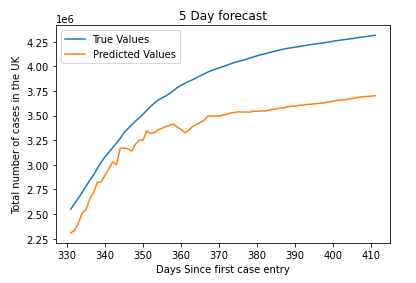
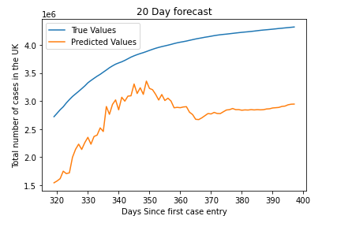
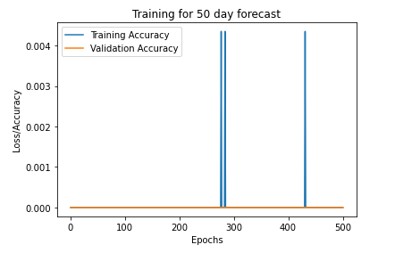
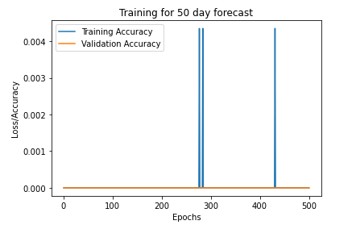

The problem presented is to design and build a Covid forecasting engine using a neural network. The metric to be forecasted here is the total number of positive cases recorded in the UK. That is to say, the cumulative number of cases in the UK since January 31st of 2020. The solution stated in this report involves building a deep neural network in Python using tensorflow modules and training the model using a section of the data from a regularly updated csv file. The performance of the model is then tested by inputting the previous seven days worth of data, predicting the total number of positive cases the next day and comparing the prediction with the true value taken from the csv file.
In the following sections of this report, the choice for the source of data will be justified and and any preprocessing involved will be explained. The design of the deep neural network will also be explained and the results will be presented.
All of the work done for this project can be found on Github.
The csv file is taken from https://covid.ourworldindata.org/data/owid-covid-data.csv. Initially, the data was taken from the United Kingdom government website. The difference between the two sources of data is that the former has a significantly larger set of parameters that could perhaps help better train the neural network model. The UK goverment website has only a set of 6 parameters per day one of which is the metric to be predicted. The “ourworldindata” website has over 50 parameters per day. While it is not necessary to use all of these parameters, should the performance of the neural network fall below reasonable accuracy then giving more parameters to learn from can maybe improve results.
Through the use of the Requests module, a function was made to download the contents csv file from the website and write them into a csv file named positive_cases.csv.
def update_data():
positive_cases_csv_URL = "https://covid.ourworldindata.org/data/owid-covid-data.csv"
req = requests.get(positive_cases_csv_URL)
URL_content = req.content
positive_cases_file = open("positive_cases.csv", "wb")
positive_cases_file.write(URL_content)
positive_cases_file.close()This newly written csv file will have Covid data from all over the world. However, for the purposes of this problem, only the data from the UK is needed. Using the csv module, a function was made to remove all non-UK data from the csv file directly. This was chosen to be done over simply removing the data from the dataframe that the csv is imported into because it made debugging the dataframe and the written functions significantly easier than having to reload the csv each runtime.
def filter_data(filename):
uk = list()
with open(filename, 'r') as readFile:
reader = csv.reader(readFile)
for row in reader:
if row[0] == "GBR" or row[0] == "iso_code":
uk.append(row)
with open(filename, 'w') as writeFile:
writer = csv.writer(writeFile)
writer.writerows(uk)Now that the csv file only had data localized to the UK, the Pandas and os modules are used to import the csv into a dataframe. After this, the first three columns are dropped because the information contained in them is a repeating entry for location and iso code. The date column is also dropped because it is not needed for the neural network input. The dates column is replaced and will be discuss later. The code also shows that a column called tests_units is removed. This is because every entry is just tests_units and these entries cannot be ennumerated.
working_dir = os.getcwd()
pos_cases_df = pd.read_csv(os.path.join(working_dir, "positive_cases.csv"))
pos_cases_df.drop(pos_cases_df.iloc[:, 0:3], inplace = True, axis=1)
dates = pos_cases_df["date"]
pos_cases_df.drop(["date"], inplace = True, axis=1)
pos_cases_df.drop(["tests_units"], inplace = True, axis=1)Now that the dataframe only has numerical strings as the data entries, the Numpy module is used to ennumerate all the entries and remove and NaN values (empty entries) as well as to remove any columns with a single repeating value. This is done because a constant value will not have an effect on the training of the neural network. Additionally the network cannot accept NaN as an input for training. This removes a great majority of the number of parameters that can be input into the neural network.
def no_NaNs(df):
data = []
for column in df.columns:
temp = [float(i) for i in df[column]]
if np.isnan(np.sum(np.array(temp))):
df.drop([column], inplace=True, axis=1)def no_repeat(df):
data = []
for column in df.columns:
if df[column].nunique() == 1:
df.drop([column], inplace=True, axis=1)| total_cases | new_cases | total_cases_per_million | new_cases_per_million | stringency_index | |
|---|---|---|---|---|---|
| 0 | 2 | 2 | 0.029 | 0.029 | 8.33 |
| 1 | 2 | 0 | 0.029 | 0 | 8.33 |
| 2 | 2 | 0 | 0.029 | 0 | 11.11 |
| 3 | 8 | 6 | 0.118 | 0.088 | 11.11 |
| 4 | 8 | 0 | 0.118 | 0 | 11.11 |
The table above is a representation of the dataframe so far after all the preprocessing that has been done on it. The index of the dataframe will be used to replace the dates column. It will indicate the number of days since January 31st of 2020. An extra column is also added for the sake of the neural network.
daysSince = []
for i in range(len(pos_cases_df)):
daysSince.append(i)
pos_cases_df["daysSince"] = daysSince| total_cases | new_cases | total_cases_per_million | new_cases_per_million | stringency_index | daysSince |
|---|---|---|---|---|---|
| 2 | 2 | 0.029 | 0.029 | 8.33 | 0 |
| 2 | 0 | 0.029 | 0 | 8.33 | 1 |
| 2 | 0 | 0.029 | 0 | 11.11 | 2 |
| 8 | 6 | 0.118 | 0.088 | 11.11 | 3 |
| 8 | 0 | 0.118 | 0 | 11.11 | 4 |
At this point all that is left is for the data to be formatted as an input to a neural network and to split the data into training and testing. The intention is to feed the model seven days worth of data and have it predict the total number of cases on the eighth day. In order to do this a sliding window is created. The size of this window is parameterized but the logic is that it will cover 7 rows in the dataframe (ignoring the first column), add these rows to a list.
At this point the list is a 2 dimensional array and for simplicity, we want the input to the model to be 2 dimensional, therefore this list is flattened to become 1 dimensional. This then flattened list is appended to the feature matrix. Similarly, the row exactly n increments from the sliding window is added to the labels matrix. The parameter n is the number of days in advance the model will attempt to forecast. This means that a new feature and label matrix will have to be generated for a new value of n and the model will have to be trained again on these new matrices.
def create_features(df, window_size, forecast):
features = []
labels = []
i = window_size;
while i < len(df.iloc[:, 0]) - forecast-1:
window = df.iloc[i - window_size: i, 1:]
window = np.array(window)
window = window.flatten()
labels.append(df.iloc[i + forecast, 0])
features.append(window)
i += 1
features = np.array(features)
labels = np.array(labels)
return features, labelsThe feature and label matrices are then split using Numpy with a 80:20 split.
training_features1, testing_features1 = np.split(features1, [int(0.8*len(features1))])
training_labels1, testing_labels1 = np.split(labels1, [int(0.8*len(labels1))])As stated before, the chosen architecture for this project is a dense neural network model. Neural networks are commonly used for classification problems such as gender detection or symbol classification. The problem faced here is a regression problem because there are no discrete metrics being looked at, all the parameters are continuous.
This means that common practices such as one hot encoding the input or output will not work here. The dense neural network architecture is the simplest by far, only using a series of dense layers for both input and hidden layers. The specific structure is shown below:
input_shape = training_features1.shape[1]
NN_model = Sequential()
# Input layer
NN_model.add(Dense(128, input_dim=input_shape, kernel_initializer="normal", activation="relu"))
# Hidden Layers
NN_model.add(Dense(256, kernel_initializer="normal", activation="relu"))
NN_model.add(Dense(256, kernel_initializer="normal", activation="relu"))
NN_model.add(Dense(256, kernel_initializer="normal", activation="relu"))
# Output layer
NN_model.add(Dense(1, kernel_initializer="normal", activation="linear"))
NN_model.compile(loss="mean_absolute_error", optimizer="adam", metrics=["accuracy"])
NN_model.summary()Layer (type) Output Shape Param #
—————————————————————-: dense_1 (Dense) (None, 128) 4608
dense_2 (Dense) (None, 256) 33024
dense_3 (Dense) (None, 256) 65792
dense_4 (Dense) (None, 256) 65792
dense_5 (Dense) (None, 1) 257
Total params: 169473, Trainable params: 169473, Non-trainable params: 0
history1 = NN_model.fit(
training_features1,
training_labels1,
epochs=500,
validation_split=0.2
)The activation function for the output layer is made to be linear because this is a regresson problem and the numerical values of the output are what is important. Within the hidden layer, ReLu is used as the activation function because it is simple and cheap in terms of processing power. Additionally, we will eventually get quite large inputs looking at later entries of the data set so it would be best if the slope does not saturate.
One problem that was encountered with compiling the model was that accuracy was not the best metric to use. Due to the problem being of regressive nature rather than classification, the model can make a prediction with only 0.5% error and the accuracy would still be zero because the prediction is not exactly correct. This would mean that even after training for over 500 epochs, the training and validation accuracy will remain poor. This can be seen in the following graphs:
One way around this was to plot the true values against the predicted values and record the percentage error and use this as relative accuracy.
x = [i for i in range(int(testing_features1[0,-1]+1), int(testing_features1[-1,-1]+2))]
y = testing_labels1
x_pred = testing_features1
y_pred = NN_model.predict(x_pred)
err1 = np.abs(y - y_pred)
acc1 = np.ones(len(y)) - np.divide(err1, y)
acc_bar1 = np.mean(acc1)
The feature and label matrices are regenerated for 2, 5, 10, 20 and 50 day forecasts and the model is trained against each of these datasets to show the performance.

The project involved using machine learning techniques to forecast the cumulative number of Covid cases in the UK. The data was imported from the Our World in Data website and preprocessed by removing non-UK data entries and all columns with NaN values as well as all columns with constant repeating data entries. This data was then flattened and split with 80:20 splitting and used to train a Deep Neural Network model. The performance of the model gradually gets worse with more the more days in advance it attempts to forecast. The best possible average accuracy being 84.86%.


 


 
 
